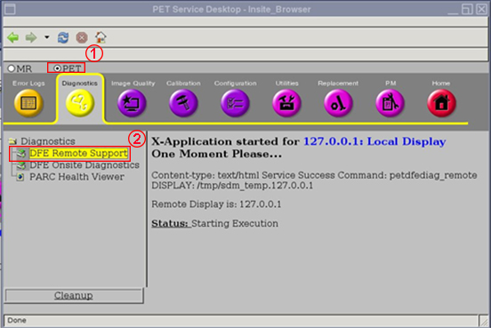
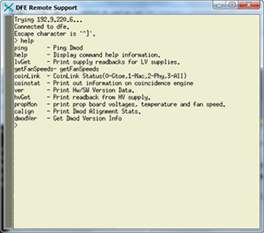
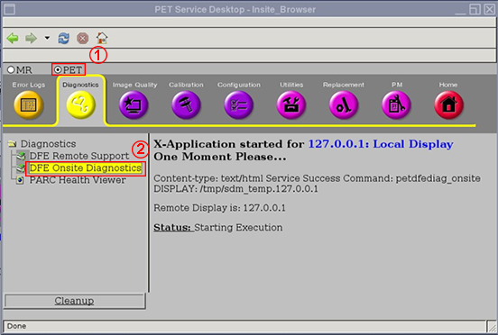

- 00000018WIA307E8030GYZ
- id_123734521.7
- Aug 15, 2019, 12:17:38 AM
Detection Front End Diagnostics
| Required persons | Preliminary requirements | Procedure | Finalization |
|---|---|---|---|
| 1 | Not Applicable | 15 minutes | Not Applicable |
The Detection Front End (DFE) Diagnostic Tool displays system data that can be used to troubleshoot the PET system while the PET detectors are energized.
Launching DFE Remote Support
- From the Common Service Desktop, select the PET radio button
(1), click the Diagnostics icon, and select DFE Remote
Support (2).
Figure 1. DFE Remote Support 
- Depending on the information needed, type the commands from
the table below into the DFE Remote Support window.
Figure 2. DFE Remote Support Window 
Table 2. DFE Remote Support Commands Command Description Explanation help Command help information Displays the commands available within telnet dfe 1707 ping Status of Distributed Modules (DMODs) Displays pings for DMODs 0 – 27, indicating Success or Fail ping # Status for a particular DMOD Displays only pinged DMOD number, indicating Success or Fail IvGet Request for low voltage (LV) supply information Not supported for PET/MR system getFanSpeeds Obtain fan speeds Not supported for PET/MR system coinLink Obtains CoinLink status Displays: 0–Gtoe, 1–Mac, 2–Phy, 3–All
Normal usage is coinLink 3
coinstat Request information on coincidence engine Displays Acquisition time in milliseconds for: # losses in sorter for earlies
# losses in sorters for lates
# losses in sorter due to being full
# losses in histogrammer
# losses in CoinBlock
# losses in CoinFifo
# losses in Assembler
# drops due to Assembler FOV filter
# total coincidences (coins) found
# total scatter – recovered coins found
# loses in bypass
# drops due to CoinLink throttle
# total saves through CoinLink throttle
# events – number of errors for each DMOD (0 - 27), total number of singles
ver Request hardware and software version data Displays the following version information: Hardware Version
CPLD
Field Programmable Gain Amplifier (FPGA Build
FPGA SVN
FPGA Build Date
Firmware (FW) Version:
FW Build ID
FW Builder
FW View
hvGet Request high voltage (HV) supply information Not supported for PET/MR system propMon Request Photon Reconstruction Organization Processor (PROP) information Displays PROP board voltages, temperatures, and fan speed calign Request DMOD alignment status Displays alignment status for DMODs 0 – 27 as: Aligned or Not Aligned dmodVer Obtain DMOD version data Displays version information for each DMOD as follows: Hardware Version:
CPLD Revision
Main FPGA Revision
Secondary FPGA Revision
Secondary FPGA Date Stamp
Firmware Version:
FW Build ID
FW Builder
FW Build View
Launching DFE Onsite Diagnostics
- From the Common Service Desktop, select the PET radio button
(1), click the Diagnostics icon, and select DFE Onsite
Diagnostics (2).
Figure 3. DFE Onsite Diagnostics 
Finalization
-
Reset power to the PROP, and perform a PET System Reset.
-
Wait 5 to 10 minutes for the System Readiness Monitor to turn green (operational).
-
Perform a PET Hello-Goodbye Scan.